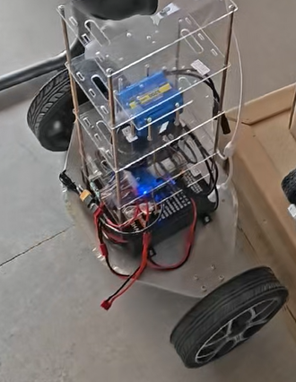
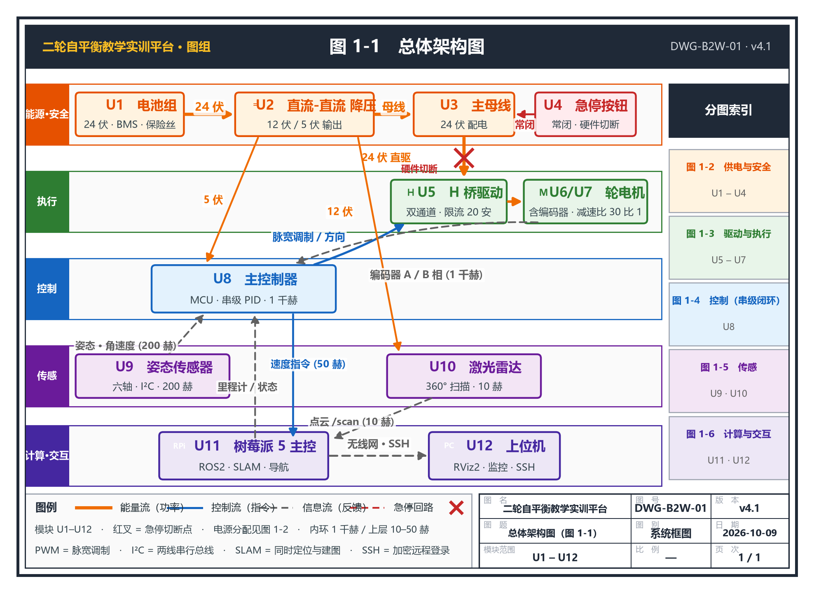

看得见
透明结构与分层图纸，让能源流、控制流和信息流一目了然。
无人系统实验教学解决方案
一套贯通机电安全、传感测量、串级控制、ROS2、SLAM 与自主导航的教学研究平台。 用 16 项递进实验，把“会操作”推进到“能解释、可复现、可迁移”。

平台把复杂机器人系统拆成可观察、可测量、可验收的知识单元。教学从危险能量管理开始，逐步建立执行、感知、控制和自主导航能力。
学生不只看到结果，还要留下接线记录、波形数据、参数整定与故障诊断证据。
透明结构与分层图纸，让能源流、控制流和信息流一目了然。
电压、PWM、编码器、姿态和点云都有明确测量对象。
从内环到外环逐级整定，以数据验证稳定性与性能边界。
方法可以迁移到移动机器人、无人系统和综合创新项目。
16 项实验 · 6 个模块
课程难度并非均匀增长。实验 7—11 是认知负荷峰值，应为建模、平衡与运动控制保留足够调试时间。
实验 1—3 · 6—8 学时
系统认知与安全、机械装配与重心、24V 配电与直流降压。
实验 4—6 · 6—10 学时
电机 PWM 与方向、编码器测速、IMU 姿态与滤波。
实验 7—11 · 12—18 学时
倒立摆建模、平衡 PID、速度环、转向控制与里程计。
实验 12—13 · 6—8 学时
节点与话题、激光雷达数据、RViz2 可视化与系统诊断。
实验 14—15 · 8—12 学时
二维建图、定位、路径规划、避障与导航任务验收。
实验 16 · 8—16 学时
围绕真实任务完成系统集成、数据验证、答辩与复现。
系统架构
沿着能源流、控制流、反馈流、急停回路和上层通信阅读系统，理解每个模块为何存在、如何协同、哪里可能失效。
当前视图
从电池组、主控制器、传感器到树莓派与上位机，建立完整系统视角。

教学实施
分层不是简单减少实验数量，而是改变任务深度、证据要求和学生需要回答的问题。
聚焦装配、测量、安全流程与基础调试。
看得懂接线，做得对流程聚焦参数整定、数据分析、波形判断和故障定位。
能解释波形，能定位问题聚焦模型假设、算法比较、系统边界与综合创新。
能验证假设，能评估边界建议评价结构
安全项建议设置为否决项，不能被其他分数抵消。
安全不是附录
应用方向